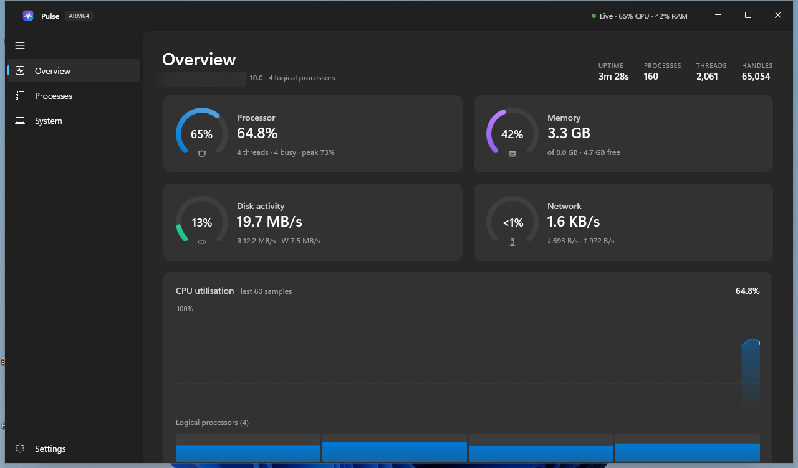

Instant Hardware & Process Telemetry
A native Windows 11 system monitor crafted with WinUI 3 and .NET 8. Features real-time radial gauges, process inspect with pause, complete hardware inventory, and modern Mica styling.

Engineered for Precision & Aesthetics
Zero bloatware. Direct Win32 performance counters. Clean modern XAML.
Direct Kernel Counters
Collects CPU, memory, disk, and network stats via low-overhead Win32 APIs (GetSystemTimes, NtQuerySystemInformation, GlobalMemoryStatusEx, PerformanceCounter).
Process Inspector
Sortable and searchable task list tracking PID, CPU percentage deltas, working set, private bytes, and threads with a real-time pause button to inspect spikes.
Comprehensive Inventory
Instant hardware inventory querying WMI, registry, and Win32 for exact CPU architecture, logical processors, socket counts, L2/L3 cache, and OS build telemetry.
Fluent Design & Mica
Adheres strictly to Windows 11 design guidelines with Mica, Mica Alt, or Acrylic materials, system accent color integration, and full dark and light mode support.
Native ARM64 & x64
Shipped as self-contained single-file native binaries for Qualcomm Snapdragon X / Surface ARM devices as well as Intel/AMD 64-bit systems.
Zero Telemetry
Pulse has no cloud phone-homes, analytics pings, or credential storage. It operates entirely locally on your Windows machine.
Download Pulse v1.0.0
Unpackaged, portable, and fully self-contained. No .NET runtime installation required.
Citation
If you use Pulse in system monitoring or research benchmarking, please cite as follows: